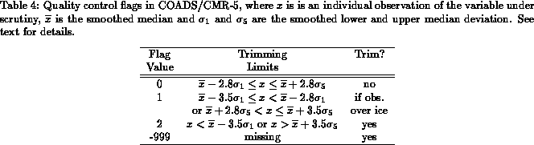

The primary data source for this study is Release 1 of COADS which covers the period 1854-1979. For the 1980's we rely on an interim data product that preceded COADS Release 1A (recently made available). Release 1A adds more observations to the interim data base and extends it to 1993. This improved data base, which was not available in time for our calculations, will be used in future versions of our analyses.
As described below, our detailed calculations require the consideration of individual ship reports. Product 10 of COADS, the Compressed Marine Reports (CMR-5), contains individual reports of surface marine and atmospheric observations from merchant vessels, research vessels, buoys, and bathythermographs (Woodruff et al. 1987). The reports in CMR-5 include the following directly reported quantities:
Quality control in COADS is implemented by means of a multiple step
statistical procedure to identify ``outliers.'' The first step is to
generate Decadal Summary Untrimmed Limits for six variables: sea
surface temperature, air temperature, air pressure, zonal wind,
meridional wind, and humidity. Sextiles are calculated for each
variable in every 2° box for each decade and month. Next, the
first, third (the median), and fifth sextiles are averaged across
latitude, longitude, month, and decade. Averaging is done for three
non-overlapping periods (1854-1909, 1910-1949, 1950-79) in an attempt
to separate possible climatic epochs or observational discontinuities.
Further smoothing is done for the resulting 216 sets of sextile
triplets (6 variables 3 periods
12 months). The result is
three sets of smoothed lower and upper limits (
)
around the smoothed mean (
) for each variable, month, and 2°
box. These means and limits are used to create trimming bounds for
the variables. A detailed description of the statistical process can
be found in Slutz et al. (1985), section C. Trimming flags for sea
surface temperature, air temperature, humidity, wind and sea level
pressure are included in CMR-5 for each observation. Note that
trimming does not take into account different methods of observation
within the same period, nor were bias corrections applied when the limits
were generated.
We have used the COADS/CMR-5 flags to perform quality control on the data used as input to our 1-degree statistics and analysis. Table 4 summarizes the possible values of the quality control flags in COADS/CMR-5. In general, an observation is rejected if it differs from the smoothed median by more than 3.5 ``standard deviations'' (flag value equal to 2) or the smoothed limits are not available (flag value equal to -999). However, over the regions climatologically covered by sea ice, this trimming procedure still yields very noisy fields. This is due to the irregular coverage of observations in ice-covered regions in both area and time. In an effort to generate smoother fields in regions where sea ice is common, a more stringent trimming criterion is used. If an observation occurs in a climatologically ice-covered region, the observation is trimmed if it differs from the smoothed median by more than 2.8 ``standard deviations'' (flag value equal to 1 or 2).
